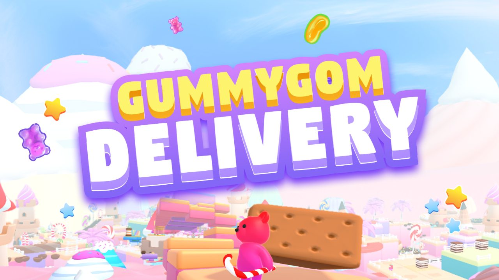
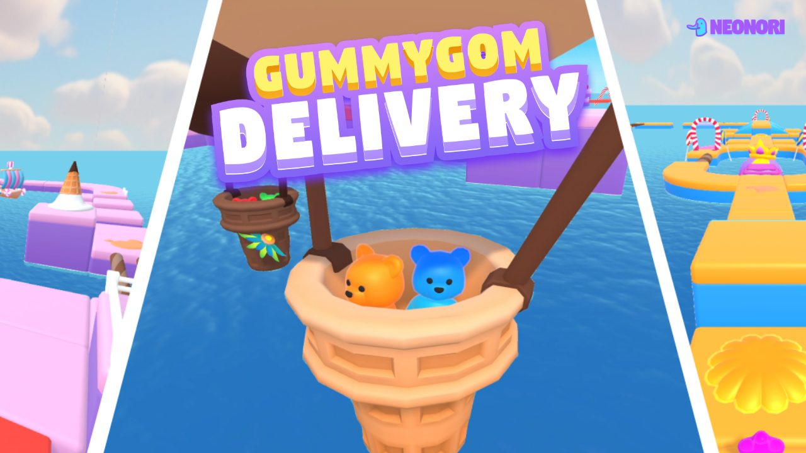
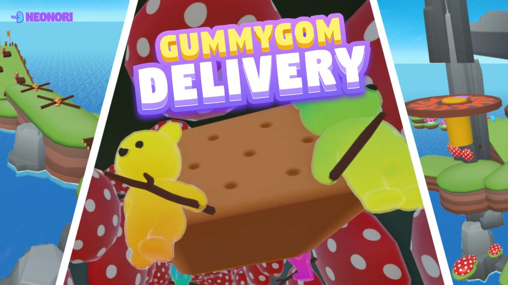
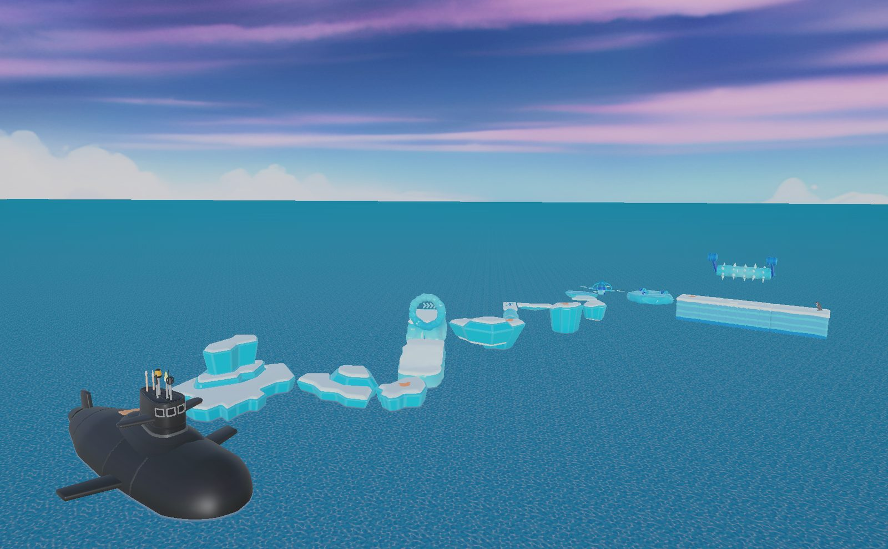

▸ 03 · Steam Demo · 2026
GummyGom Delivery
판자 위 화물의 균형을 네 명이 함께 맞추는 협동 3D 플랫포머
▸ 03 · Steam Demo · 2026
판자 위 화물의 균형을 네 명이 함께 맞추는 협동 3D 플랫포머

01프로젝트
「GummyGom Delivery」는 판자 위 화물의 균형을 네 명이 함께 맞추는 협동 3D 플랫포머입니다. 저는 팀에서 기획·레벨디자인·QA·운영을 맡았습니다. 팀은 Steam 직접 판매를 목표로 2026년 5월 데모를 출시했습니다.
02반복된 불편부터
개선 작업에서는 유저가 반복해서 불편하다고 말한 부분을 고쳤습니다. 게임의 차별점인 슬링샷은 합류 전 팀 설문에서 사용법과 방향 조절 문제로 가장 많이 지적됐고 Steam 데모 리뷰에서도 다시 지적됐습니다. 팀은 이를 최우선 과제로 정했고 저는 팀원 한 명과 함께 맡았습니다.
03레벨 · QA · 스토어
South Pole(설원) 스테이지의 세션 1~4를 레벨 디자인했고 QA에서는 네트워크 지연, 충돌 판정, 진행 불가 버그를 점검했습니다. 영어권 로컬라이징을 검수하고 한·영 스토어 문구도 직접 썼습니다.
04결과
데모는 라이브러리 추가 약 1,000건을 기록했고 저는 스토어 노출·방문 지표를 분석했습니다.
수상과 라이브러리 추가 숫자는 팀 성과입니다. Steam 데모 페이지
반복되는 불편부터 고치는 일이 출시 뒤 개선의 출발점이라고 생각하게 됐습니다.
Gallery



Documents · 4